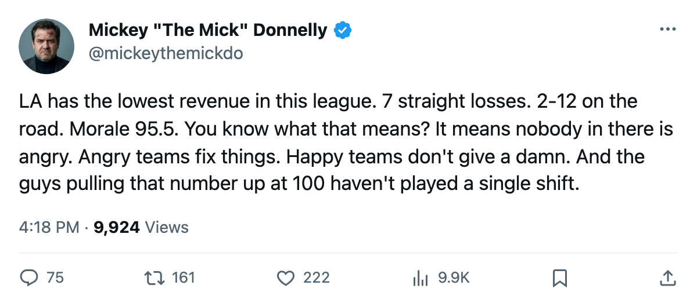
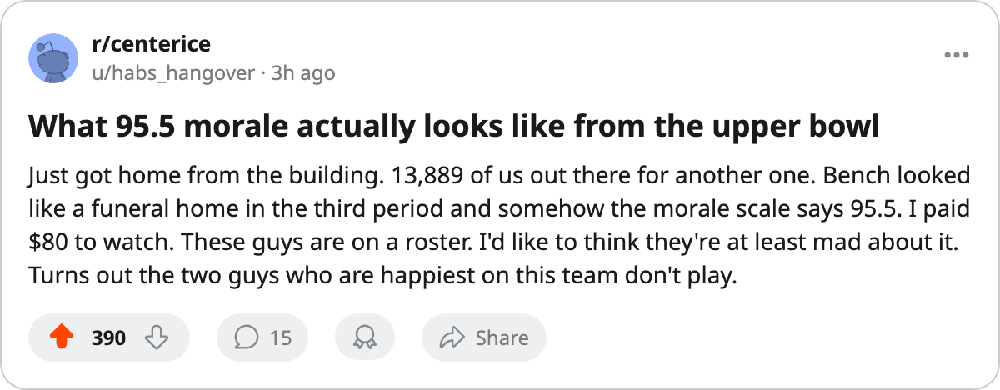

MORALE 95.5. RECORD 3-11-4. LOS ANGELES IS THE HAPPIEST LOSING CLUB IN HOCKEY
The lowest revenue in the league, 2-12 on the road, 7 straight losses, and the Bureau's Morale Scale ranks the Kings 8th in a 30-club league.
 Mickey "The Mick" DonnellyColumnist, ex-goalie · The Penalty Box
Mickey "The Mick" DonnellyColumnist, ex-goalie · The Penalty Box
The  Los Angeles Kings Kings are 3-11-4 with 14 points. They have lost 7 in a row. They are 2-12 on the road. Their revenue is $33.33M a game, the lowest number in this league.
Los Angeles Kings Kings are 3-11-4 with 14 points. They have lost 7 in a row. They are 2-12 on the road. Their revenue is $33.33M a game, the lowest number in this league.
And the Bureau's Morale Scale puts that locker room at 95.5. Eighth best in 30 clubs. Higher than the  New York Rangers, who sit first in the Atlantic with 33 points and a morale of 94.7. Higher than the
New York Rangers, who sit first in the Atlantic with 33 points and a morale of 94.7. Higher than the  New Jersey Devils, who are 11-3-1 and unbeaten away from Newark (93.2). Higher than the
New Jersey Devils, who are 11-3-1 and unbeaten away from Newark (93.2). Higher than the  Detroit Red Wings (94.2), the
Detroit Red Wings (94.2), the  Minnesota Wild (93.3), the
Minnesota Wild (93.3), the  Toronto Maple Leafs (92.3), and 21 other clubs that have better records than Los Angeles Kings and less reason to smile.
Toronto Maple Leafs (92.3), and 21 other clubs that have better records than Los Angeles Kings and less reason to smile.
How does a team lose 7 straight and rank above the division leaders on a scale that measures whether a man wants to lace them up?
The answer walks on the roster and never skates
Stephen Beech58 and  Francis Lessard58 both sit at 100 on the Morale Scale. Neither man has played a game this season. Beech is a left winger rated 60 overall. Lessard is a defenseman rated 60 overall. They don't dress, they don't sit on the bench watching the 7th straight loss while a teammate gets pulled for the third time in the second period. They collect a roster spot and a morale point and the scale averages them right into the room.
Francis Lessard58 both sit at 100 on the Morale Scale. Neither man has played a game this season. Beech is a left winger rated 60 overall. Lessard is a defenseman rated 60 overall. They don't dress, they don't sit on the bench watching the 7th straight loss while a teammate gets pulled for the third time in the second period. They collect a roster spot and a morale point and the scale averages them right into the room.
Strip those two and the number shifts, but barely, because the bottom of the Los Angeles Kings roster is padded with healthy scratches at 95 and above. The men who actually skate 20 minutes a night, the ones losing 7 straight and watching the road trip calendar fill up with another 2-12 away record? The scale says the room is fine.
That's the story. Not misery. Apathy.
 Mike Cammalleri81 is the one man on this sheet who looks like a Los Angeles Kings player worth watching. He is up 10 on the Index at 83 overall, age 23, with 5 points in 9 games. Jared Aulin71 sits alongside him as a riser, up 8 at 73 overall with 3 points in 11 games. Two young men on the Index and nobody else. No Los Angeles Kings player appears in the top 30 scorers. Nobody from Los Angeles Kings appears in the top 20 penalty minutes. Nobody from Los Angeles Kings appears on the Index as a faller, which would at least suggest a man in that building knows the season is sinking.
Mike Cammalleri81 is the one man on this sheet who looks like a Los Angeles Kings player worth watching. He is up 10 on the Index at 83 overall, age 23, with 5 points in 9 games. Jared Aulin71 sits alongside him as a riser, up 8 at 73 overall with 3 points in 11 games. Two young men on the Index and nobody else. No Los Angeles Kings player appears in the top 30 scorers. Nobody from Los Angeles Kings appears in the top 20 penalty minutes. Nobody from Los Angeles Kings appears on the Index as a faller, which would at least suggest a man in that building knows the season is sinking.
The math at the gate
Los Angeles Kings brings in $33.33M a game in revenue. That is less than  Phoenix Coyotes ($34.91M) which is the other club asking $82 a seat for 11,380 bodies and a 5-14-1 record. Los Angeles Kings draws 13,889 at $80. The payroll is $50.80M. Every point costs $3.63M, third-worst value in the league behind Phoenix Coyotes at $4.26M and
Phoenix Coyotes ($34.91M) which is the other club asking $82 a seat for 11,380 bodies and a 5-14-1 record. Los Angeles Kings draws 13,889 at $80. The payroll is $50.80M. Every point costs $3.63M, third-worst value in the league behind Phoenix Coyotes at $4.26M and  Ottawa Senators at $4.23M.
Ottawa Senators at $4.23M.
The Kings profit $13.37M a game doing nothing. The front office is fine. The locker room is fine. The 13,889 people who bought the $80 ticket sat through another loss and went home and the scale at the Bureau says the men on the ice don't mind.
Los Angeles Kings plays  Florida Panthers Saturday at home. The Panthers are 5-11-3 and 2-10 on the road. They are the only club in this league that travels worse than Los Angeles Kings does. The Kings are 3-3 at home, the only slice of their season that looks like hockey. If they lose that one on the 8th straight night, the 95.5 has to crack. I wouldn't hold my breath.
Florida Panthers Saturday at home. The Panthers are 5-11-3 and 2-10 on the road. They are the only club in this league that travels worse than Los Angeles Kings does. The Kings are 3-3 at home, the only slice of their season that looks like hockey. If they lose that one on the 8th straight night, the 95.5 has to crack. I wouldn't hold my breath.

